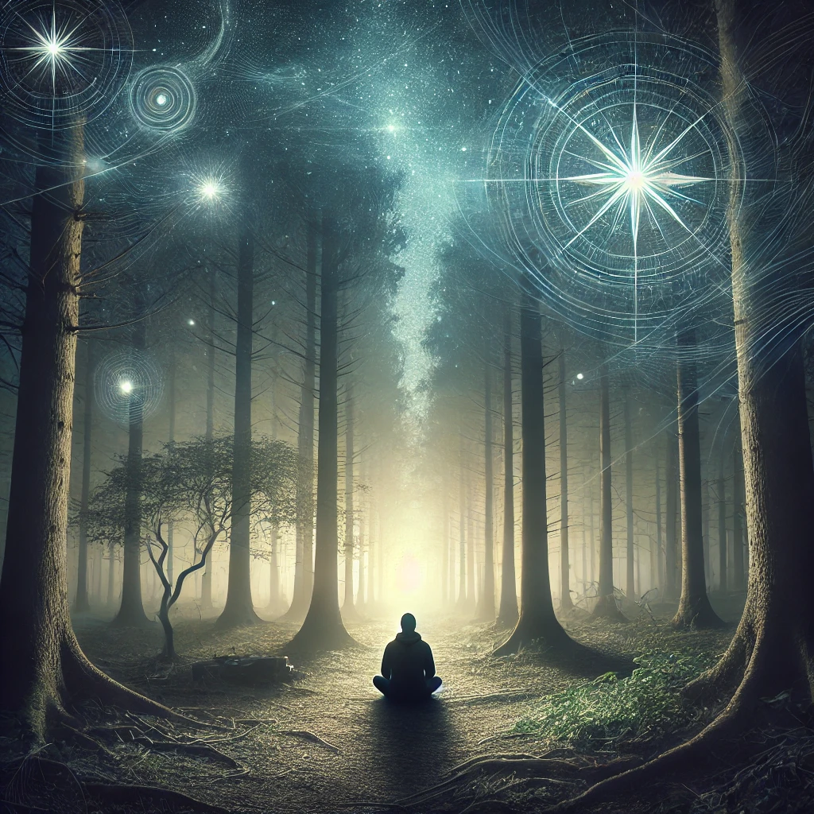

You find a quiet clearing, where the air is still, and the faint glow of starlight filters through the trees. Sitting down, you let the weight of the journey so far settle within you. The sounds of the forest hum softly, offering a sense of peace.
As you close your eyes, visions of the choices you’ve made begin to surface. They swirl like fragments of dreams, reminding you of where you’ve been and hinting at what lies ahead. The compass rests in your lap, vibrating gently, as if attuned to your thoughts.
“Sometimes the path forward begins with stillness,” a voice within whispers. “Reflection reveals clarity. Rest reveals strength.”
The stillness deepens, and the moment invites you to decide what to reflect on:

What will you focus on during this time of reflection?